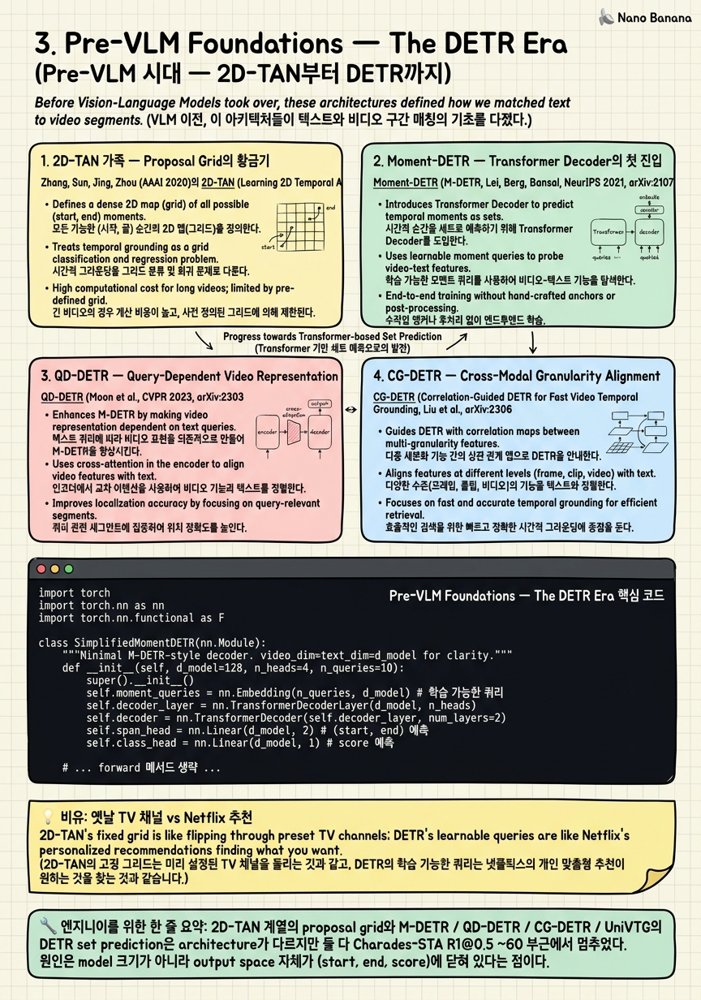

Pre-VLM Foundations — The DETR Era

🎯 학습 목표
- 2D-TAN의 proposal grid가 어떻게 enumeration cost를 trade-off로 정확도를 얻는지 설명할 수 있다
- Moment-DETR의 N개 learnable moment query와 set-prediction Hungarian matching의 구조를 도식화할 수 있다
- QD-DETR / CG-DETR가 왜 "query-dependent" video representation을 강조했는지를 ablation 관점에서 정당화할 수 있다
- UniVTG가 MR / HD / TAL을 한 head로 통일하는 방식과 그 한계를 비교할 수 있다
- span regression head + frozen text encoder가 R1@0.5 ~60에서 멈춘 정량적 이유를 세 가지 이상 들 수 있다
- compositional / negative / OOD 시나리오에서 DETR-style이 왜 brittle한지를 chapter 4의 generative 접근과 대비할 수 있다
- edge inference나 latency-bound 환경에서 DETR-style을 여전히 채택해야 하는 조건을 식별할 수 있다
Chapter 2에서 우리는 benchmark의 7가지 bias가 어떻게 temporal grounding evaluation을 왜곡하는지 보았다. 이 chapter는 한 발 더 뒤로 가서, 그 benchmark들 위에서 2020-2023년 SOTA를 점령했던 "pre-VLM" 모델 가족을 해부한다. 핵심 메시지는 단순하다 — 두 흐름이 같은 ceiling에 부딪혔다. 첫 흐름은 Zhang et al. (AAAI 2020)의 2D-TAN으로 시작한 proposal-grid 계열로, 가능한 모든 (start, end) 쌍을 2D map 위에 enumerate하고 ranking head가 score를 매기는 방식이다. 두 번째 흐름은 Lei et al. (NeurIPS 2021)의 Moment-DETR으로 시작해 QD-DETR (CVPR 2023), CG-DETR (2023), UniVTG (ICCV 2023)로 이어진 DETR-style set prediction이다. 후자는 N개의 learnable moment query가 cross-attention으로 video feature를 흡수해 (start, end, score)를 직접 출력한다. 이 chapter에서 우리는 (1) 두 흐름의 architecture와 핵심 trick, (2) 그들의 loss landscape — span L1, GIoU, Hungarian matching, set prediction, (3) Charades-STA R1@0.5 ~60에서 plateau가 생긴 정량적 이유, (4) 그리고 왜 chapter 4의 generative VLM이 이 ceiling을 뚫었는지를 본다. 마지막에는 30-45줄짜리 simplified M-DETR decoder를 PyTorch로 직접 구현해, learnable query → cross-attention → span MLP head라는 핵심 ingredient를 코드로 확인한다.
핵심 내용
1. 2D-TAN 가족 — Proposal Grid의 황금기
Zhang, Sun, Jing, Zhou (AAAI 2020)의 2D-TAN (Learning 2D Temporal Adjacent Networks for Moment Localization with Natural Language, arXiv:1912.03590)은 단순하지만 강력한 아이디어다. 비디오를 N개 clip으로 자른 뒤 N×N 2D map의 (i, j) 셀에 "i부터 j까지의 moment" candidate를 채운다. 상삼각만 valid (i ≤ j). 각 셀은 query embedding과 fuse된 뒤 stack of 2D conv를 거쳐 score를 받는다. 즉 enumeration + ranking이다. 학습 시 ground-truth와 IoU가 높은 셀에 high score를 회귀시키는 IoU regression loss를 쓴다. 장점은 (1) 가능한 모든 길이의 moment를 cover, (2) adjacent cell 간 2D conv로 contextual relation을 직접 모델링한다는 점이다.
후속작 MS-2D-TAN (Multi-Scale 2D Temporal Adjacent Networks, TPAMI 2021, arXiv:2012.02646)은 길이 스펙트럼을 stride가 다른 multi-scale 2D map들로 분리해서, 짧은 moment와 긴 moment가 같은 grid 해상도를 공유하지 않도록 했다. 이 family의 SOTA는 Charades-STA에서 R1@0.5 ~46-50, ActivityNet R1@0.5 ~44-46이었다.
핵심 한계: (a) N×N 셀 enumeration cost가 video length에 quadratic하다 — 1시간짜리 video에는 사실상 불가능하다. (b) score는 IoU regression이지만 ranking 자체는 cross-modal 의미 정합에 약하다. (c) frozen GloVe / BERT text encoder는 "the man washes the dish after he opens the tap" 같은 compositional query를 그대로 묶음 embedding으로 처리한다 — 즉 temporal 순서 정보를 잃는다. 이 세 약점이 다음에 등장할 DETR 계열의 motivation이 된다.
2. Moment-DETR — Transformer Decoder의 첫 진입
Moment-DETR (M-DETR, Lei, Berg, Bansal, NeurIPS 2021, arXiv:2107.09609)은 이 분야에 두 가지를 동시에 가져왔다. 첫째, set prediction: Hungarian matching으로 N개의 prediction과 ground-truth moment를 1:1로 매칭한다 (DETR을 object detection에서 가져온 방식). 둘째, QVHighlights라는 새 benchmark — multi-moment + saliency까지 동시에 푸는 어려운 setup이었다.
Architecture는 (1) video frame을 SlowFast / CLIP feature로 임베딩, (2) text query를 CLIP / RoBERTa로 임베딩, (3) 두 modality를 cross-modal Transformer encoder에 흘려보낸 뒤, (4) N=10 learnable moment query가 Transformer decoder에서 cross-attention으로 video memory를 흡수, (5) 각 query당 (start_norm, end_norm, foreground_score)를 출력한다. Loss는 L1 span loss + GIoU(Generalized IoU) span loss + foreground classification loss + saliency loss의 weighted sum이다.
QVHighlights에서 [email protected] ~52, mAP ~30대로 강력한 baseline을 세웠지만, Charades-STA에 옮기면 R1@0.5는 53-55에 머물렀다. 핵심 이유: text encoder가 frozen RoBERTa이고, video encoder는 SlowFast/CLIP — 즉 language reasoning capacity가 입력단에 고정되어 있다.
3. QD-DETR — Query-Dependent Video Representation
QD-DETR (Moon et al., CVPR 2023, arXiv:2303.13874)의 진단은 날카로웠다. Moment-DETR을 ablation해보니, text query를 랜덤 noise로 바꿔도 성능이 거의 떨어지지 않았다 — 즉 model이 video prior만 가지고 답을 거의 다 내고 있었다 (Otani et al.의 "caption-only bias" 진단과 같은 결의 발견).
QD-DETR의 대응은 query를 decoder query뿐 아니라 encoder의 video feature에까지 의존시키는 것이었다. 구체적으로 (1) cross-attentive encoder를 도입해 video token이 text token에 cross-attend하도록 강제, (2) negative-pair learning을 추가해 mis-matched (video, query) 쌍을 명시적으로 떼어놓는다.
결과: QVHighlights mAP를 5-7%p 끌어올렸고 Charades-STA R1@0.5도 57-58까지 올렸다. 하지만 흥미로운 점은 여전히 R1@0.5 ~60 벽을 깨지 못했다는 것. 즉 query-dependent video representation은 "video가 query를 무시하던 병"을 고쳤지만, output space가 여전히 (start, end, score)의 span regression이기 때문에 ceiling은 그대로였다.
4. CG-DETR — Cross-Modal Granularity Alignment
CG-DETR (Correlation-Guided DETR for Fast Video Temporal Grounding, Moon et al., 2023, arXiv:2311.08835)는 한 단계 더 들어간다. 문제 진단: word-level token과 video frame-level token이 attention pool에서 동일 granularity로 섞이는데, 실제로는 "opens" 같은 동사는 순간 event에, "washes" 같은 동사는 지속 event에 alignment된다.
CG-DETR의 해법은 (1) adaptive cross-modal alignment — token마다 다른 attention temperature를 학습해 sharpness를 조절, (2) moment-adaptive saliency detector — 길이가 다른 moment에 대해 다른 receptive field를 부여. 효과는 QVHighlights에서 SOTA를 한 번 더 갱신했고, 무엇보다 inference 속도가 빨라졌다 (이름의 "Fast").
이 시점에서 "DETR-style은 점점 attention granularity를 세분화하는 방향으로 trick을 쌓고 있다"는 패턴이 보인다. 그러나 trick이 쌓일수록 model-specific hyperparameter도 늘어나고, dataset-transfer가 어려워졌다.
5. UniVTG — One Head for MR, HD, TAL
UniVTG (Towards Unified Video-Language Temporal Grounding, Lin et al., ICCV 2023, arXiv:2307.16715)은 또 다른 각도로 진화했다. 그동안 (a) Moment Retrieval (MR), (b) Highlight Detection (HD), (c) Temporal Action Localization (TAL)이 각각 다른 head로 풀렸는데, UniVTG는 세 task를 한 head로 통일했다.
핵심 design: 모든 task를 per-frame (foreground_prob, offset_to_start, offset_to_end) triplet 출력으로 통일한다. (1) MR은 query-conditioned foreground, (2) HD는 saliency score, (3) TAL은 action class-conditioned foreground로 reduction된다. Large-scale pretraining (Ego4D narration + VideoCC + InternVid에 가까운 weak text-video pair)을 통해 zero-shot transfer까지 봤다.
성과: 5개 benchmark cross-task SOTA — Charades-STA R1@0.5 ~58, QVHighlights mAP ~38-40. UniVTG의 의의는 "여러 task를 한 architecture로 푸는 통일적 view"를 처음 보여줬다는 점이며, 그게 곧 chapter 4의 VLM이 모든 timestamp task를 token generation으로 통합한다는 발상의 직접적 전조였다.
6. Loss Landscape — Span L1, GIoU, Set Prediction
DETR 계열 전체에서 reused되는 loss 조합을 정리하자. Prediction은 N개 moment query의 (start_norm_i, end_norm_i, score_i)이고, ground-truth는 M개 ground-truth span.
Hungarian matching: cost matrix C ∈ R^{N×M}을 두고 (1-σ(score_pred)) + λ_L1·|span_pred - span_gt|_1 + λ_giou·(1 - GIoU(span_pred, span_gt))의 weighted sum으로 cost를 정의, scipy.optimize.linear_sum_assignment로 1:1 매칭.
Span L1 loss: 매칭된 쌍에 대해 |start_pred - start_gt| + |end_pred - end_gt|. Simple하지만 scale-invariant하지 않다 — 30초 비디오에서 1초 오차와 60초 비디오에서 1초 오차가 같은 cost.
Generalized IoU (GIoU) loss: GIoU = IoU - |C \ (A ∪ B)| / |C|, where C는 두 span을 모두 포함하는 최소 enclosing span. 1 - GIoU를 loss로 사용해 IoU=0인 경우에도 gradient가 흐른다 — 이게 vanilla IoU loss 대비 핵심 advantage.
Foreground classification loss: σ(score)에 binary CE. 매칭되지 않은 query는 negative class.
이 조합이 만들어내는 ceiling의 정량적 원인: (a) L1과 GIoU 모두 *span boundary*가 정답에 sharp하게 정의된다고 가정하지만, 실제 annotation은 1-2초의 boundary noise를 갖는다 (Charades-STA의 annotation guideline 자체가 ~1s tolerance). (b) Hungarian matching은 N개 query 중 정확히 M개만 positive라는 가정인데 multi-moment query에서 disjoint moment 수를 model이 미리 알기 어렵다. (c) frozen text encoder는 query의 compositional structure ("A then B" vs "A and B")를 같은 sentence embedding으로 매핑해버린다. 이 세 가지가 결합해 Charades-STA R1@0.5 ~60에서 모든 DETR-variant가 멈췄다.
7. The R1@0.5 ~60 Ceiling — Why It Held
2021-2023 사이 십여 개 paper가 같은 plateau에서 멈춘 데는 reproducible한 이유가 있다.
Failure mode 1 — Compositional query: "the man opens the fridge then closes it"에서 "opens"와 "closes"는 서로 다른 시각 event를 가리키지만, frozen RoBERTa는 두 동사를 같은 sentence 평균 embedding으로 압축한다. Model은 두 event 중 더 visually salient한 것 하나에 fit한다.
Failure mode 2 — Negative query ("the man does NOT open the fridge"): DETR head는 "foreground exists" classifier뿐 abstention head가 없다. Foreground confidence를 강제로 낮추는 학습 신호 자체가 dataset에 없다. Charades-STA-Negative 같은 split을 쓰면 7B-scale VLM조차 30-50% false-positive를 낸다 (chapter 9 참고).
Failure mode 3 — Long video: 1시간 video에서 (start_norm, end_norm)이 [0, 1]에 normalize되면 1초 단위 boundary precision은 normalized 0.0003 수준 — L1/GIoU의 gradient가 사실상 사라진다.
Failure mode 4 — Annotation noise: Charades-STA boundary annotation은 ~1초 noise를 갖는다 — R1@0.5 (8초 평균 moment의 50% IoU)는 ~4초 정확도 요구 — annotation noise floor와 model precision floor가 같은 수준에서 만난다.
네 failure mode 모두 더 큰 model + 더 많은 trick으로는 풀리지 않는다. architecture의 output space가 (start, end, score) closed form인 한, 한정된 ceiling이다.
8. When to Still Use DETR-Style in 2026
DETR 계열을 박물관 유물로만 볼 일은 아니다. 2026년 실무에서 여전히 합리적인 선택지가 있다.
Use case 1 — Edge inference: QD-DETR / CG-DETR variant는 50-200M parameter scale에서 동작한다. 7B VLM은 mobile / IoT에서 거의 불가능하다. 비디오 frame이 이미 추출되고 fixed text query template이 정해진 시나리오 (e.g., 보안 카메라의 "a person enters the room" detection)에서는 DETR-style이 latency / power 면에서 압도적이다.
Use case 2 — Low-resource fine-tuning: 1K 미만 annotated sample만 있는 domain (industrial inspection, medical video)에서는 7B LLM의 timestamp token tuning이 catastrophic forgetting + 데이터 부족 양면에서 위험하다. UniVTG-style head를 frozen video backbone 위에 갈아끼우는 게 종종 더 견고하다.
Use case 3 — Real-time saliency for QVHighlights-like dataset: highlight + moment 동시 출력이 필요한 production 환경 (스포츠 클립 자동 생성)에서 SMORE / SG-DETR 같은 DETR variant가 여전히 QVHighlights 상위권을 유지한다 (avg mAP +4%p 수준, chapter 2 SOTA 표 참고).
Use case 4 — Latency-bounded streaming: streaming first-token latency가 200ms 미만이어야 하면 VLM autoregressive decoding이 부적합. DETR head는 single forward pass라 latency가 deterministic하다.
실무 결정 기준: (a) query template이 fixed인가, (b) 비디오 길이가 5분 이내인가, (c) annotation budget이 10K 이상인가 — 셋 중 둘 이상이 yes면 DETR-style이 여전히 first-pick. 아니면 chapter 4 이후의 VLM-as-grounder로 가는 게 맞다.
9. Forward Reference — Why Generation Broke the Ceiling
이 chapter의 마지막 줄은 의도적으로 cliff hanger다. R1@0.5 ~60 ceiling을 깬 것은 더 큰 DETR이 아니라, output space의 변형이었다.
VLM-as-grounder (chapter 4) — UniTime, MeCo, TimeChat, VTimeLLM — 는 (start, end) span을 회귀하지 않는다. 대신 timestamp를 문자열 token으로 생성한다. 예: "<TIME>4.2</TIME> to <TIME>11.8</TIME>". 이게 왜 ceiling을 깼는가?
(1) Output space가 open: discrete token vocabulary 위에서 sampling하므로 multi-moment, no-moment (abstention), descriptive ("around 5s") 모두 같은 head로 표현 가능.
(2) Language reasoning capacity가 7B+ LLM: frozen RoBERTa의 60M parameter 대신 Qwen2.5-VL-7B의 in-context reasoning이 "opens then closes" 같은 compositional query를 실제 분해.
(3) Pretrain transfer: 수십억 token의 web-scale text-video pretraining에서 얻은 prior가 zero-shot에 잔존. M-DETR은 zero-shot 거의 불가능했다.
(4) RL fine-tuning이 가능: GRPO + verifiable tIoU reward가 token generation에서 자연스럽게 정의된다 (chapter 5).
Time-R1이 Charades-STA R1@0.5를 60→72.2로, AVI가 [email protected]을 88.6으로 끌어올린 게 같은 이유다. 다음 chapter에서 우리는 이 verbal generation paradigm을 architecture / training / failure mode 측면에서 본다.
💡 비유로 이해하기
2010년대 TV는 채널 번호와 편성표로 작동했다. 7번 채널은 9시에 뉴스, 11시에 드라마. 시청자가 원하는 건 "오늘 저녁 뭐 보지" 같은 의도였지만, 시스템은 미리 정해진 슬롯에 미리 정해진 포맷의 콘텐츠만 제공할 수 있었다. 화면에 띄울 수 있는 후보는 채널 가이드의 격자 안에 갇혀 있었다.
2D-TAN의 N×N proposal grid가 정확히 그 채널 가이드다. 가능한 모든 (start, end) 슬롯이 미리 enumerate되어 있고, ranking head가 그중 하나를 고른다. DETR-style은 채널 가이드를 더 똑똑하게 만든 버전이다 — "오늘 시청자가 뭘 좋아할지" 추론은 좀 더 잘 하지만, 출력은 여전히 (start, end, score)의 정해진 칸이다.
Netflix는 다른 종류의 시스템이다. "오늘 저녁 액션 뭐 있어?"를 자연어로 받고, 자유롭게 후보를 생성하고, 시청 패턴을 보고 다시 ranking한다. 출력 공간이 *열려* 있다. VLM-as-grounder가 timestamp를 token으로 *생성*하는 게 같은 변화다. 그래서 chapter 4 이후의 model들은 "채널 가이드의 어느 칸인가"가 아니라 "어떤 timestamp 문자열을 출력할까"를 푼다.
중요한 건 채널 가이드가 *나쁘다*는 게 아니다. 정해진 슬롯이 비즈니스에 맞는 경우 (보안 카메라의 고정된 query, 스포츠 하이라이트의 fixed format)에는 여전히 효율적이다. 그러나 사용자가 "the man does not open the fridge" 같은 negative query, "A then B then C" 같은 compositional query, 1시간짜리 video에서의 search query를 던질 때, 채널 가이드의 격자는 표현력 자체가 부족하다. 출력 공간을 *언어*로 바꾸는 게 그 표현력 ceiling을 푸는 유일한 길이었다.
💻 코드 예시
Moment-DETR의 핵심 ingredient — N개 learnable moment query가 video memory에 cross-attend해 (start, end, score) span을 출력하는 구조 — 를 PyTorch 30여 줄로 재현한다. Batch size 2, video sequence length 32, hidden dim 128, N=10 query, single decoder layer로 단순화했지만 실제 M-DETR의 forward pass shape는 동일하다.
import torch
import torch.nn as nn
import torch.nn.functional as F
class SimplifiedMomentDETR(nn.Module):
"""Minimal M-DETR-style decoder. video_dim=text_dim=d_model for clarity."""
def __init__(self, d_model=128, n_heads=4, n_queries=10):
super().__init__()
self.n_queries = n_queries
# N learnable moment queries (DETR's signature trick)
self.moment_queries = nn.Embedding(n_queries, d_model)
# Cross-modal encoder: text token attends to video tokens and vice-versa
self.cross_modal_attn = nn.MultiheadAttention(d_model, n_heads, batch_first=True)
# Decoder: queries cross-attend to fused video memory
self.decoder_cross_attn = nn.MultiheadAttention(d_model, n_heads, batch_first=True)
self.decoder_ffn = nn.Sequential(
nn.Linear(d_model, d_model * 4), nn.ReLU(),
nn.Linear(d_model * 4, d_model),
)
self.norm1 = nn.LayerNorm(d_model)
self.norm2 = nn.LayerNorm(d_model)
# Heads: span (start, end) regression + foreground score
self.span_head = nn.Linear(d_model, 2) # (start_norm, end_norm) in [0,1]
self.score_head = nn.Linear(d_model, 1) # foreground logit
def forward(self, video_feats, text_feats):
# video_feats: (B, T_v, d), text_feats: (B, T_t, d)
B = video_feats.size(0)
# 1) Fuse text into video memory (QD-DETR-style query dependence)
fused, _ = self.cross_modal_attn(
query=video_feats, key=text_feats, value=text_feats,
)
memory = self.norm1(video_feats + fused) # (B, T_v, d)
# 2) Expand N moment queries across batch
q = self.moment_queries.weight.unsqueeze(0).expand(B, -1, -1) # (B, N, d)
# 3) Decoder cross-attention: queries attend to fused video memory
attn_out, _ = self.decoder_cross_attn(query=q, key=memory, value=memory)
q = self.norm2(q + attn_out)
q = q + self.decoder_ffn(q)
# 4) Heads
spans = self.span_head(q).sigmoid() # (B, N, 2), normalized to [0,1]
scores = self.score_head(q).squeeze(-1) # (B, N)
# Enforce start <= end by sorting along last dim
start = spans.min(dim=-1).values
end = spans.max(dim=-1).values
return torch.stack([start, end], dim=-1), scores
if __name__ == "__main__":
torch.manual_seed(0)
model = SimplifiedMomentDETR(d_model=128, n_heads=4, n_queries=10)
video = torch.randn(2, 32, 128) # batch=2, 32 video tokens
text = torch.randn(2, 16, 128) # 16 text tokens
spans, scores = model(video, text)
print("spans:", spans.shape, "scores:", scores.shape)
print("sample span 0:", spans[0, 0].tolist(), "score:", scores[0, 0].item())
이 코드의 4단계를 따라가면 DETR-style의 본질이 그대로 보인다. (1) moment_queries = nn.Embedding(N, d) — N개의 learnable vector는 "slot" 역할. 각 slot이 한 moment를 책임진다. 학습 후 query마다 다른 길이 / 위치 patten에 특화된다. (2) cross_modal_attn(query=video, key=text) — QD-DETR이 강조한 query-dependent fusion. Text token이 value로, video token이 query로 들어가 video memory가 text-conditioned로 갱신된다. 이 한 줄을 빼면 (즉 vanilla M-DETR로 돌아가면) text를 거의 무시하는 baseline이 된다. (3) decoder_cross_attn(query=q, key=memory, value=memory) — N개 slot이 fused video memory에서 자신에게 필요한 정보를 pull. Hungarian matching loss를 결합하면 slot마다 서로 다른 ground-truth moment를 책임지도록 학습이 emerge한다. (4) 두 head — span_head은 (start_norm, end_norm)을 sigmoid로 [0,1] 정규화하고, score_head은 foreground 확률 logit을 출력. 마지막의 start = spans.min(...), end = spans.max(...)는 swap 방지 trick.
실제 학습 시 추가로 필요한 것: (a) scipy.optimize.linear_sum_assignment로 Hungarian matching, (b) L1 span loss + GIoU loss + BCE score loss의 weighted sum, (c) saliency head (QVHighlights용). 실 production code (Moment-DETR github)는 약 500줄이지만, 여기 보인 30줄이 그 핵심 forward pass다. 이 코드를 chapter 4의 "timestamp token을 LLM에서 생성" 코드와 직접 비교해보면, output space가 *수치 vector → 문자열 token*으로 어떻게 바뀌는지가 한눈에 보인다.
🏭 현업에서의 평가
✅ 시니어가 보는 것
- 왜 Charades-STA R1@0.5가 ~60에서 멈추었는지를 architecture (output space), loss (annotation noise vs precision floor), data (compositional / negative absence) 세 layer로 분해 설명할 수 있는가
- Hungarian matching + L1 + GIoU 조합 각각이 왜 필요한지, 한 component를 빼면 어떤 failure mode가 생기는지 예시로 답할 수 있는가
- QD-DETR의 "query를 noise로 바꿔도 성능 안 떨어진다" 진단을 자기 코드에서 ablation으로 검증할 수 있는가
- edge / low-resource / fixed-template 시나리오에서 DETR-style을 여전히 선택할 합리적 기준을 명시할 수 있는가
⚠️ 레드 플래그
- "DETR 계열은 오래된 거라 안 쓴다"라고 단정 — production sense 없음
- L1 loss와 GIoU loss를 같은 것으로 취급 (gradient flow 차이를 모름)
- Moment-DETR과 DETR (object detection)의 차이를 N moment query 외에 설명하지 못함 — set prediction 개념 부재
- R1@0.5 plateau를 "data가 부족했기 때문"으로만 환원 — output space 제약을 보지 못함
- MS-2D-TAN의 multi-scale design이 왜 도입되었는지 설명 못함 (short vs long moment 분리 동기)
🎤 예상 인터뷰 질문
- {'question': 'Charades-STA에서 R1@0.5가 ~60에서 plateau된 이유를 두 가지 이상의 구조적 요인으로 설명해보세요. "더 큰 model"이 답이 안 되는 이유까지 포함해서.', 'whatToLookFor': '강한 답: (1) output space가 (start, end, score) closed form — multi-moment, no-moment, descriptive 표현 불가, (2) frozen text encoder가 compositional query ("A then B")의 순서 정보를 잃음, (3) span L1/GIoU loss가 1초 단위 boundary noise (annotation floor) 수준에서 더 이상 신호 못 줌, (4) negative annotation 부재로 abstention head를 학습할 신호 없음. 약한 답: "data가 부족했다", "model이 작았다". 추가 점수: Time-R1이 60→72.2를 어떻게 깼는지 — output space를 token generation으로 바꾸고 RL reward로 fine-tune했다는 점을 forward reference.'}
- {'question': 'Moment-DETR의 loss 조합은 span L1 + GIoU + foreground BCE + Hungarian matching입니다. 각 component를 *왜* 그 자리에 둬야 하는지, 하나 빼면 어떤 failure가 발생할지 답해보세요.', 'whatToLookFor': '강한 답: (a) L1만 쓰면 IoU=0에서도 일관된 gradient지만 scale-invariant하지 않다 (긴 video에서 small relative error가 큰 cost로 안 잡힘); (b) GIoU만 쓰면 매우 distant span에서 gradient가 약해 매칭 초기에 학습이 stall; (c) foreground BCE 없으면 N query 모두 foreground로 fit하려 듦 — false positive 폭증; (d) Hungarian matching 없으면 N query가 같은 ground-truth로 collapse (mode collapse). 강한 후보는 한 component를 빼는 ablation을 실제로 돌려본 경험을 인용한다.'}
- {'question': '오늘 2026년에 DETR-style temporal grounding을 production에서 채택해야 하는 시나리오 한 개와, 절대 채택하면 안 되는 시나리오 한 개를 각각 들어보세요.', 'whatToLookFor': '강한 답 (채택): 보안 카메라의 fixed query template ("a person enters") + edge device + sub-200ms latency 요구 — VLM autoregressive decoding이 불가능, QD-DETR 50-200M parameter scale이 적합. 또는 sports highlight 자동 생성 — QVHighlights-style moment + saliency 동시 필요, SMORE/SG-DETR가 여전히 SOTA. 강한 답 (피해야): hour-scale video search (ExtremeWhenBench 시나리오) — DETR의 N×N proposal이나 N query 모두 quadratic / fixed-N으로 explode, retrieve-then-ground hybrid나 agentic search가 6.7× 성능 우위 (mIoU 0.110 → 0.354). 약한 답: "옛날 거라 안 씀" / "VLM이 무조건 낫다" 같은 단정.'}
✨ 핵심 요약
두 흐름, 같은 ceiling
2D-TAN 계열의 proposal grid와 M-DETR / QD-DETR / CG-DETR / UniVTG의 DETR set prediction은 architecture가 다르지만 둘 다 Charades-STA R1@0.5 ~60 부근에서 멈추었다. 원인은 model 크기가 아니라 output space 자체가 (start, end, score)에 닫혀 있다는 점이다.
Moment-DETR이 가져온 두 가지
Lei et al. (NeurIPS 2021)의 M-DETR은 (a) N개 learnable moment query + Hungarian matching이라는 set-prediction view, (b) QVHighlights라는 multi-moment + saliency joint benchmark를 동시에 가져왔다. 이 두 contribution이 이후 3년의 DETR-variant 모두의 출발점이 됐다.
QD-DETR의 진단이 핵심
Moon et al. (CVPR 2023)의 ablation에서 "text query를 noise로 바꿔도 성능 안 떨어진다"는 관찰이 caption-only bias의 architectural 사촌이다. Query-dependent video representation으로 이를 해결했지만, ceiling 자체는 그대로였다 — 즉 query-blindness는 하나의 증상이고 진짜 병은 output space 제약이었다.
UniVTG = pre-VLM의 정점
Lin et al. (ICCV 2023)의 UniVTG는 MR / HD / TAL을 per-frame (fg, offset_start, offset_end) triplet head 하나로 통일했고 large-scale weak pretraining까지 도입했다. "여러 task를 한 architecture로"라는 발상은 곧 chapter 4의 "여러 task를 한 token vocabulary로" generalization의 직접적 전조다.
Loss는 죄가 없다
Hungarian matching + L1 + GIoU + BCE 조합은 잘 작동한다 — 다만 (a) annotation noise floor (~1초) 이하의 precision을 요구하면 gradient가 사라지고, (b) compositional / negative / multi-moment 시나리오에서 표현력 자체가 부족하다. Loss를 더 다듬어도 깨지지 않는 ceiling이다.
DETR-style은 박물관 유물이 아니다
Edge inference (50-200M parameter scale), fixed query template, sub-200ms latency, 10K 미만 annotation 시나리오에서는 QD-DETR / CG-DETR / SG-DETR이 2026년에도 여전히 first-pick이다. "VLM이 무조건 낫다"는 false dichotomy — production decision은 use case에 따라 갈린다.
Output space 변형이 ceiling을 깼다
Time-R1 (Charades-STA R1@0.5 72.2), AVI ([email protected] 88.6)가 ~60 plateau를 깬 공통 분모는 더 큰 model이 아니라 *output을 numerical span에서 timestamp string token으로 바꾼* 점이다. Open vocabulary는 multi-moment, abstention, descriptive 표현을 모두 한 head로 자연스럽게 처리한다. Chapter 4의 verbal generation paradigm이 정확히 이 변환이다.
Forward reference — 왜 다음 chapter가 chapter 4인가
이 chapter는 pre-VLM 시대를 *완결된 시대*로 닫는다. Chapter 4는 같은 task를 timestamp token generation으로 재정의한다. 두 chapter를 같이 읽으면 paradigm shift가 "data가 더 많아져서"나 "transformer가 더 커져서"가 아니라 *task output space의 정의*가 바뀐 결과임이 분명해진다.